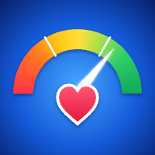

📡 オフライン状態です。キャッシュから起動しています。

ホーム画面に追加すると、アプリとしてすぐ開けます
追加のしかた
✕
ホーム画面に追加
PPM判定 をアプリとして開けるようにします
✕
「…」はこの下 ▼
🫀 PPM判定アプリ
AVR（大動脈弁置換術）生体弁・機械弁・スーチャレスバルブ サイズ選択時の Prosthesis-Patient Mismatch 簡易評価
患者情報
身長 (cm)
体重 (kg)
BSA (m²)
計算値
—
身長・体重から計算（Mosteller 式）
BMI (kg/m²)
—
BSA 直接入力 (m²)
— 任意
クリア
空欄のときは、身長・体重からの計算値で判定します
術式・弁選択
術式
EOA 参照元
メーカー公称値
文献採用値
バルブ名
サイズ
判定結果
🔊 音声読み上げ
音声：読み込み中…
🔊 読み上げ
⏹ 停止
読み上げ中
自動読み上げ
速度
1.0
全弁 比較表（現在のBSAで判定）
EOA参照元：
メーカー公称値
文献採用値
身長・体重を入力すると全弁の判定が表示されます
🤖 AI アシスタント（OpenAI）
OpenAI API Key
※ API キーはブラウザ内のみで使用され、外部サーバーには送信されません（直接 OpenAI API を呼び出します）。
🏭 バルブの説明
📊 PPM 補足・助言
📝 総合コメント
📋 EOA 一覧を表示する
📲 ホーム画面に追加する（アプリとして開けるようにする）
⚠ 注意事項
本アプリは簡易評価用です。スクリーニング目的でのみご使用ください。
実際の臨床判断はガイドライン、文献、術前画像評価、術中判断を含めて総合的に行ってください。
EOA 値は参照元により差がありうるため、施設採用値に差し替えて運用してください。
PPM 判定閾値はメーカーによって異なります（高度PPM：Magna/INSPIRIS/Mosaic は ≤ 0.75、Epic/Regent は < 0.80、On-X は < 0.65、Avalus は ≤ 0.65。低リスク：Avalus・Magna/INSPIRIS は > 0.85、On-X・Regent は ≥ 0.85）。Mosaic・Epic は原本の写真に凡例がなく、0.85 ちょうどの扱いは要確認（≥ 0.85 として判定）。SAPIEN 3 Ultra RESILIA (TAVI) は VARC III 基準（> 0.85 / ≤ 0.65）。Perceval（スーチャレス）は ASE 2024 統一基準（≤ 0.65）を適用。各メーカー表と同じく、iEOA を小数第2位に四捨五入した値で判定します。
弁種（機械弁／生体弁）の表示は見分けるための目印です。判定の閾値は弁ごとに決まっており、弁種の表示では変わりません。
BSA は Mosteller 式（√(身長cm × 体重kg ÷ 3600)）で計算し、小数第2位に丸めた値で判定します。
判定区分は BMI 30 未満の基準です。BMI 30 以上の患者には別の基準が推奨されているため（VARC 3：中等度 iEOA ≤ 0.70、高度 ≤ 0.55。アバラスの EOAi チャートにも記載）、BMI 30 以上では結果欄に注意を表示します。
判定結果の色の濃淡、「黄に近い緑」などの表示、サイズ別の BSA 上限は、判定区分の境界からの距離を示す目安です（臨床的な追加区分ではありません）。メーカー公称 EOA は平均値のため、境界付近の区分は特に幅をもって解釈してください。
Perceval の EOA は臨床推定値です（Pivotal trial 集計値からの按分）。サイズ別の臨床 Doppler EOA が公表された場合は差し替えを推奨します。
AI アシスタントの回答は参考情報であり、臨床的意思決定の根拠にはなりません。
—
結果を見る